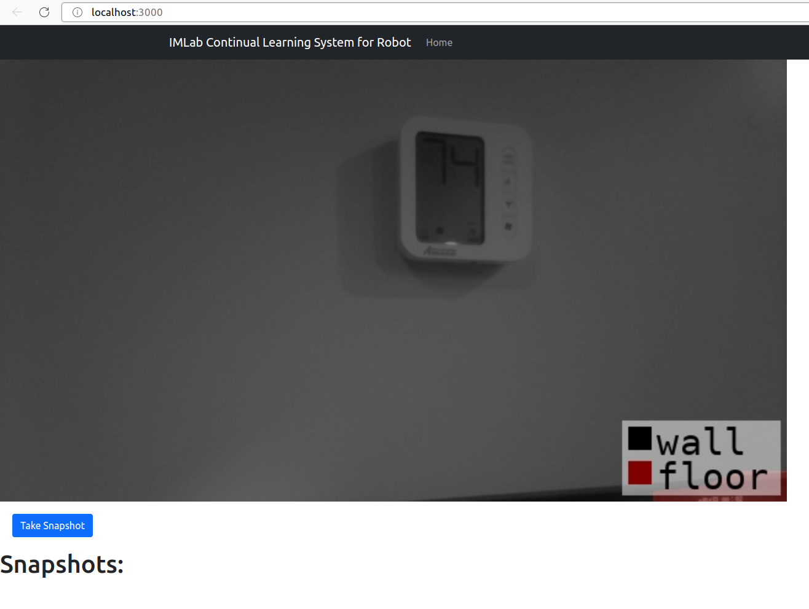
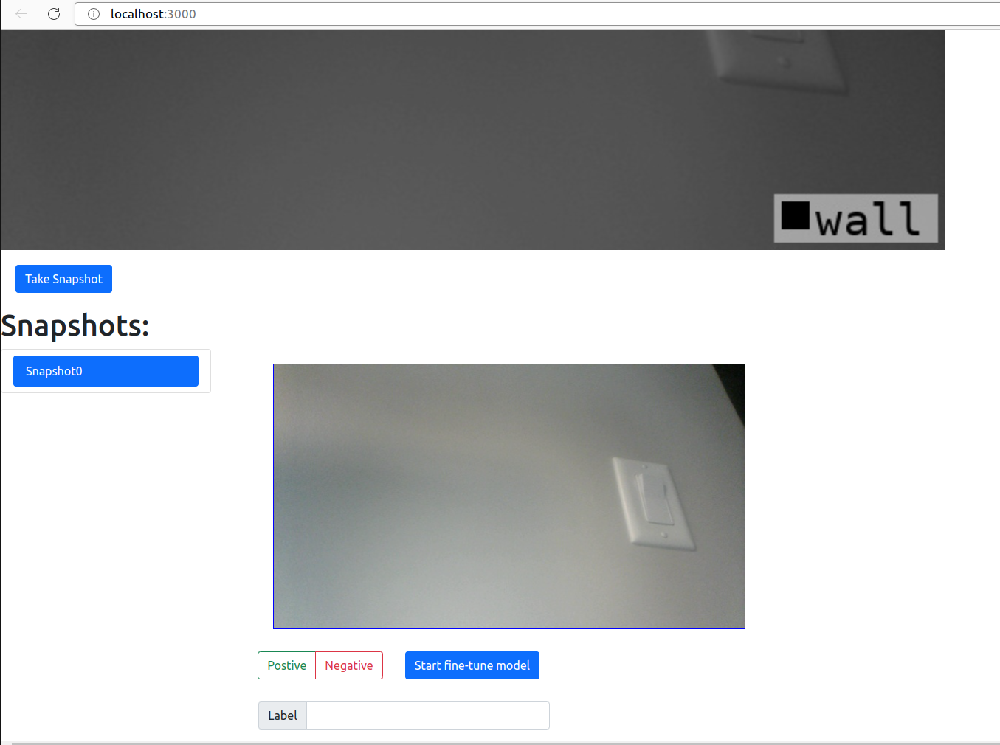
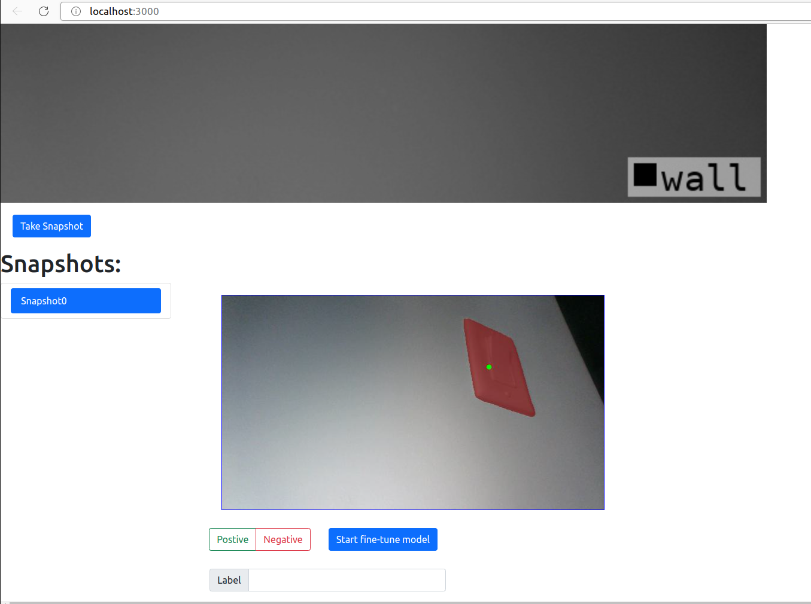

Start to Use the System
Running
- Please run these 3 different commands separately in the specified path:
- Check out to the path of
cl_ritm_backend/ritm-backend/and run the following command: $ python3 app.py
- Check out to the path of
- Check out to the path of
cl_systemand run the following command: $ python3 main/web_app.py --cfg ./web_app.yaml
- Check out to the path of
- Check out to the path of
cl_frontendand run the following command: $ npm start
- Check out to the path of
- After running the commands above, you will see a html webpage poped up like this:
- 
{kind=link}
Training
Our system could recognize 20 objects by default: ‘wall’, ‘floor’, ‘cabinet’, ‘bed’, ‘chair’, ‘sofa’, ‘table’, ‘door’, ‘window’, ‘bookshelf’, ‘picture’, ‘counter’, ‘desk’, ‘curtain’, ‘refrigerator’, ‘shower curtain’, ‘toilet’, ‘sink’, ‘bathtub’, ‘otherfurniture’.
In order to train the system to recognize other objects, here are some steps you need to do:
Move the camera towards the objects you would like to recognize.
- Click
take the snapshot, and you will see an image like this:- 
- Then click the positive button and then click the object that you would like to make the system recognize. You can make multiple clicks on your object to make sure the system could fully mask the object.
- 
Finally, you can click start fine-tune model to train it.
{kind=link}
{kind=link}
{kind=link}
{kind=link}
{kind=link}